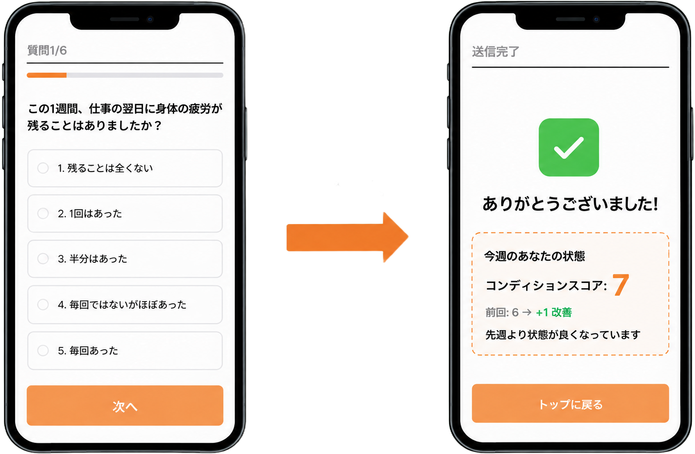
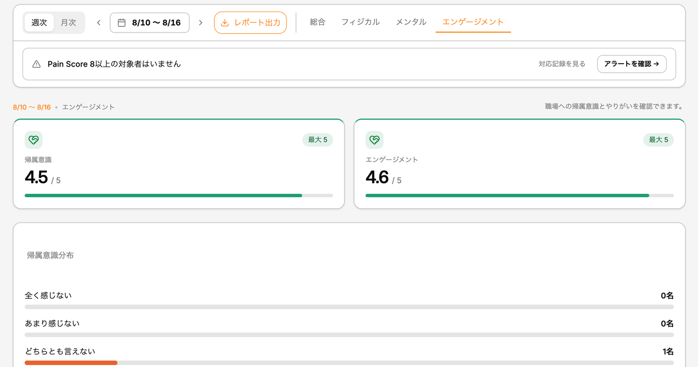
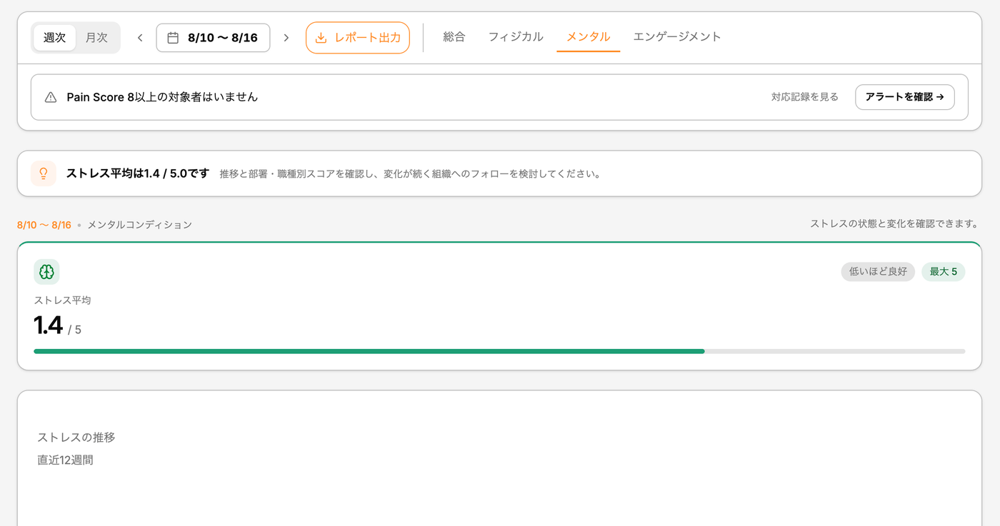
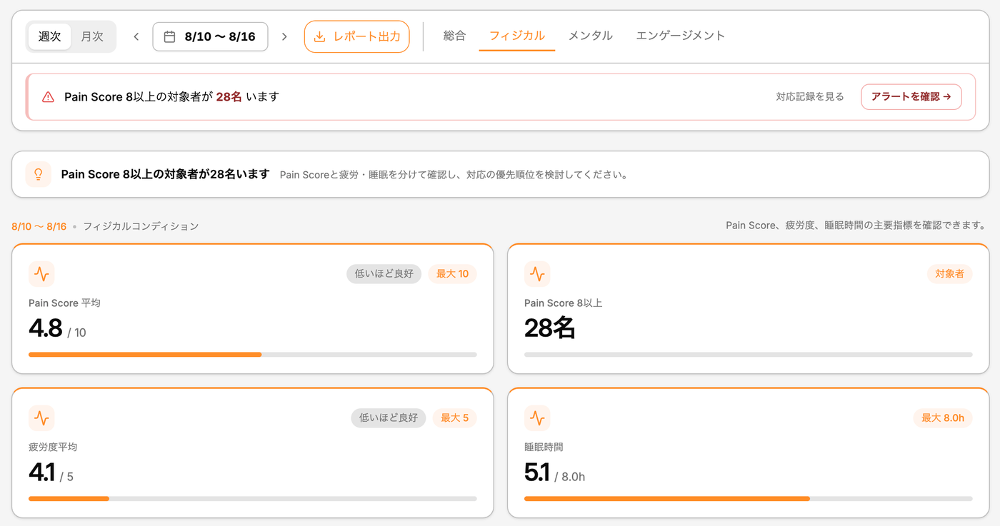
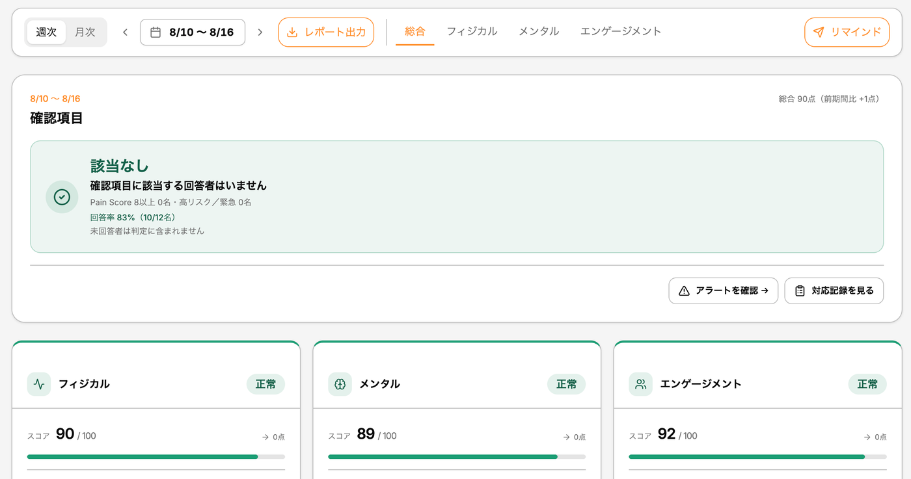

Adory SaaS
現場の「痛み」を週次でデータ化し、管理者が先手を打てる仕組みをつくります。
LINEだけで、現場の状態が見える
アプリのダウンロード・PC・パスワードは不要。普段使いのLINEだけで完結する設計です。
通知が届く
デフォルトは毎週月曜7時。頻度・曜日・時間は企業ごとに設定できます。
6問に回答
約2分。選択式のみで、自由記入は任意です。
データ化
スコア化して部署別・職種別に集計します。
変化を検知
閾値超過や前週比の悪化を自動で抽出します。

実際の回答画面。設問は簡略化して掲載しています。
6問の設問設計（理学療法士監修）
フィジカルを主軸に、メンタルとエンゲージメントを補助指標として測定します。設問・スコアロジック・アラートロジックのすべてが監修対象です。
疲労度
慢性的な疲労の蓄積を可視化
痛み
負担部位と深刻度を同時に把握
睡眠時間
回復不足の兆候を検知
ストレス
心理的負荷の変化を把握
帰属意識
組織への帰属感を把握
やりがい
エンゲージメントの変化を検知
配信設定はカスタマイズできます
デフォルトは毎週月曜7時。企業ごとに頻度（週次・隔週・月次）、曜日、時間を設定できます。シフト勤務や隔日勤務の現場に合わせた配信が可能です。変化を捉える観点から週次を推奨しています。
匿名性の設計
企業側にお渡しするのは組織全体・部署単位のスコアです。個人が特定される形での回答内容の開示は行いません。現場から外されるといった不安を抱えずに回答いただくための設計です。人数が少ない単位では表示しない仕様にしています。
管理者が、感覚ではなくデータで動ける
回答結果から、総合・フィジカル・メンタル・エンゲージメントの4つのダッシュボードが生成されます。
総合ダッシュボード
今週対応が必要な人数をファーストビューに表示。緑から赤の4段階でリスクを色分けします。詳細はタップで開く設計です。
フィジカル
Pain Score平均と8以上の該当人数を最初に表示。部位別分布（腰・首肩・手腕・膝・足首ふくらはぎ・その他）、直近12週間の推移、疲労と睡眠の相関係数を自動算出します。
メンタル
ストレス平均を週次で数値化し、直近12週間の推移を目標値と比較。部署別・職種別のランキングで、緊急・高リスク・要注意・正常の4段階に分類します。
エンゲージメント
帰属意識とやりがいを週次で数値化。5段階の分布で組織全体のばらつきを把握し、どの部署で低下しているかを横断的に比較できます。
部位・部署・職種ごとに、的を絞った対策を検討できます
フィジカルの打ち手の例
- 腰の負担が多い部署では、リフト機材の導入や重量物のペア作業化を検討
- 首・肩が多い場合は、作業姿勢や環境の見直し
- 緊急・高リスク判定の部署から優先的にヒアリング
- 職種別データで、特定作業に負荷が偏っていないかを確認
睡眠・疲労の打ち手の例
- 睡眠不足層が多い部署・拠点から優先的に対策を検討
- 勤務シフト・休憩時間の見直し
- 産業医面談や外部相談窓口（EAP等）の案内
- 相関が強い場合、睡眠改善を施策の優先順位づけに使う
一般的に検討される対策の例です。実際の施策は各社の状況に応じてご判断ください。




総合・フィジカル・メンタル・エンゲージメントの4画面。掲載データはすべてダミーです。
対応の経緯を、説明できる状態にする
「知らなかった」より「気付いて対応した記録がある」状態の方が、万が一の際に説明できます。結果として会社を守ることにつながります。
アラート管理
週次データから自動抽出されたアラートを一覧表示。優先度（緊急・高・中）別に色分けし、未対応のみで絞り込めます。
対応記録
声かけ・産業医相談などの対応履歴をアラートと紐づけて記録。対応漏れを防ぎます。
証跡として保存
閲覧のみで編集・削除ができない仕様。安全配慮義務の観点から、対応の経緯を残せます。
日々の身体の痛み・疲労の蓄積・離職直前のサインという管理の空白が残っています。Adoryはここを週次の記録で埋めます。